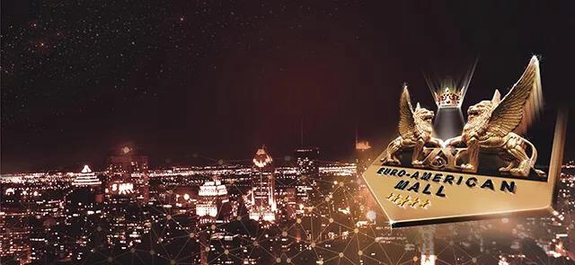
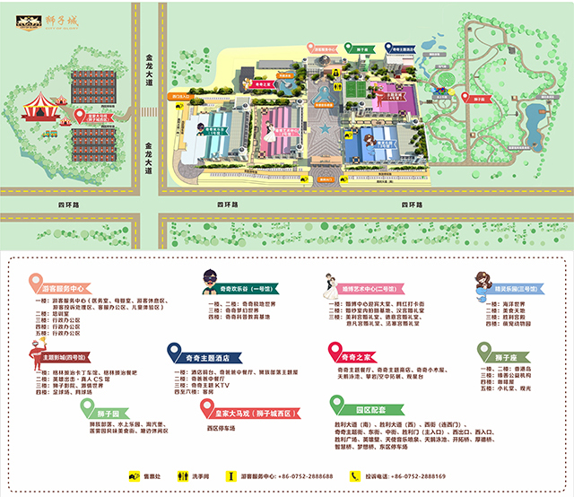
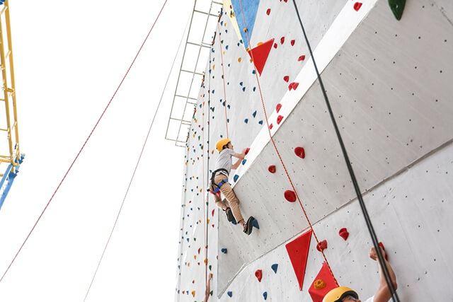
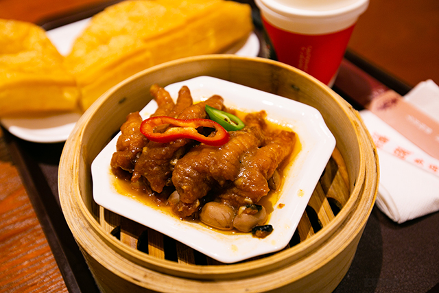
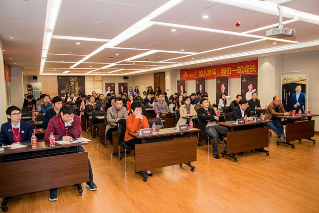
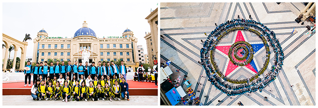
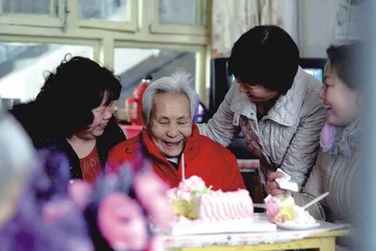
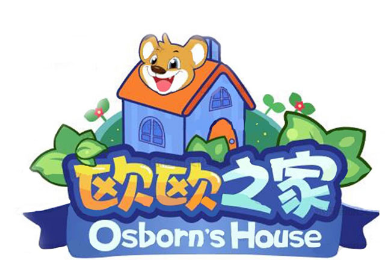
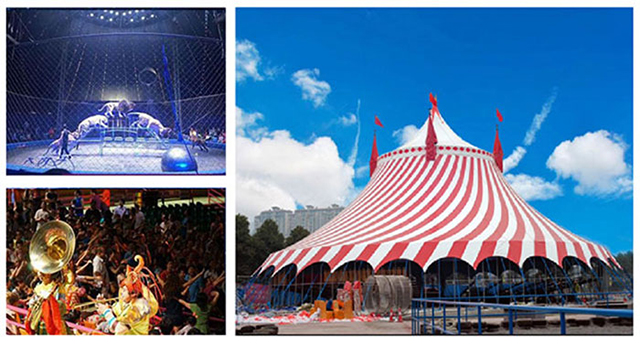

文化创新 城市名片
分享快乐小城的故事——狮子城

公司简介
狮子城文化创意园由深圳狮子城文化股份有限公司投建，项目主体公司深圳狮子城文化股份有限公司于2015年在全国中小企业股份转让系统挂牌，证券简称：狮子城，证券代码：430173。狮子城总部设在深圳，对接资源、品牌输出，布局全国。
狮子城主文化IP小狮奇奇及其一家（奇爸爸、奇妈妈、小狮茜茜）作为吉祥物形象，其独特的故事性贯穿各主业态成为狮子城的文化核心，衍生出的多业态交叉经济具备强大的市场竞争力及品牌影响力。

发展历程
2012
创立并启动欧美城项目
正式开始文旅版块的探索之路
2013.11.8
项目试点工程汕头欧美城盛大开业
在粤东乃至广东产生巨大影响
2014.11.9
布局全国样板工程
惠州欧美城动工兴建
2015
收购新三板挂牌上市企业
证券简称：欧美城
证券代码：430173
2016.6.15
惠州欧美城主体建筑顺利封顶
公司举行封顶庆典及答谢宴
2017.5.30
欧美城
进入新三板创新层
2018.7
惠州欧美城部分业态开始试业
2019.8
原欧美城文化小镇（简称欧美城）更名
狮子城文化创意园（简称狮子城）
北京总部迁至深圳福田区

商业模式
◆
整合跨界各全体验式业态，搭建狮子城实体平台；
◆
打造自主文化IP为核心，提升品牌市场效应；
◆
通过互联网与自媒体的合作进行传播、集聚大量客流达到资源分享、经济交叉的现代服务业， 极具强大的市场竞争力和品牌影响力；
◆
以“旅游观光、文化体验、研学教育、休闲娱乐”为一体的集结地，以“活动城”概念为核心， 打造多业态交叉经济的商业模式，达到重复性消费的商业设计要求。

荣誉奖项
◆
荣获“北京中关村高新科技企业”认证
◆
获评2016年年度“全国股转100强企业（新三板）最具成长性十佳企业”荣誉称号
◆
获评2016年年度“全国战略转型十佳企业”荣誉称号
◆
2017年年中，惠州狮子城、汕头狮子城双双通过市级文化产业园区认定
◆
2017年11月，获评第三届中国新三板高峰会暨企业风云榜“最具发展潜力企业”
◆
2018年1月，获评第二届中国新三板发展论坛“最具发展潜力公司”
◆
2018年5月，惠州狮子城被认定“惠州市科普教育基地”
◆
2018年6月，惠州狮子城被认定“惠城区科普教育基地”,“惠州市文化创意园区”,“惠州市海龟科普教育示范窗口”
◆
2019年2月，惠州狮子城荣获“惠州市十大研学基地”称号
◆
2019年3月，惠州狮子城被认定为“拥军优属先进企业”
◆
2019年4月，惠州狮子城被认定为““广东省研学旅行协会会员单位”
◆
2019年4月，惠州狮子城被认定为““中国旅游景区协会会员单位”
◆
2019年7月，惠州狮子城被认定为““广东科普旅游联盟会员单位”

全国样板
2014年11月，标准工程狮子城文化创意园惠州站动工兴建，项目位 于广东惠州惠城区金龙大道主干轴，总占地面积250亩，主体建筑面积达 11万平方米，集“旅游观光、文化体验、研学教育、休闲娱乐”功能为一 体的多元化新型文化创意园区。万众瞩目的惠州狮子城文化创意园项目已 于2018年7月部分业态试营业！

16个主业态
海洋文化主题
[ 海洋世界 ]
狮子城与国内外著名团队携手合作的海洋文化体验馆。以海底沉落的宫殿、海盗沉船等神奇情景作为海底世界景观，游客不仅可以观赏海底美人鱼唯美表演、海狮欢乐秀剧场表演等，还可以身临其境，感受5D无水海洋的神秘空间及观赏各类海洋生物，结合科普引领游客一起探索神秘的海底世界。
海洋馆二楼是美食天地，三楼是胜利宫殿，四楼则是萌宠动物园。可满足社会不同群体的游玩需要。

婚博文化主题
[ 婚博艺术中心 ]
提供一站式大型婚庆策划、婚礼仪式堂预定、婚宴宴请、婚车租赁、蜜月之旅、室内室外婚纱摄影等新型服务，配套狮子座仪式堂、海洋主题婚礼等个性化婚礼服务。致力于打造惠州市乃至广东省规模最大、最高端的专业婚庆文化产业基地。

赛车文化主题
[ 格林披治卡丁车馆 ]
引进国际先进的法国Sodi卡丁车和赛道设计，致力打造中国最具实力的赛车运动文化的孵化基地，配套文化餐吧，延伸赛车达人俱乐部，组织发烧友Party、竞技交流会。

体育文化主题
项目配备空中足球场、空中网球场、泳池、攀岩、空中拓展、真人CS馆、卡丁车馆等多项运动场所，可承接旅游团、企事业单位团建、院校团体军训，运动品牌发布会，各类体育赛事等等。

演艺文化主题
[ 胜利广场汇演 ]
5000平米胜利宫殿和上万平方胜利广场，完全足够胜任各种大型文化艺术表演、创作艺术展览、时尚音乐会等，成就狮子城对演艺文化市场的多层次、多样性、多元化的市场需求。

餐饮文化主题
打造5000平米空间的美食天地，汇聚各国、各地方特色美食。莲雾园风味美食街，5000平米多功能厅，6大专业婚宴厅，各馆配套餐饮休闲区，满足餐饮全系列 需求。

团建拓展主题
项目配备多功能展厅、培训室、美食区、户外广场等，打造一个可以同时容纳数千人规模的学训食住一体化的惠州市市级乃至广东省省级标准的研展示范基地，承接惠州乃至全国各地到惠州的党政、学生及企事业单位团建拓展需求。

研学教育主题
从游乐、创意、科普、体验等全方位，自主创新为基础，打造极地动物明星齐聚的虚拟真实相融合的极地馆，配建教育与娱乐相结合的新世代儿童娱乐体验场，让孩子们在馆内观看了精彩的极地动物表演后，还可以增添新的游玩项目，同时给市民营造出一个保护环境保护动物的科普平台。

文化交流平台
[ 奇奇主题酒店 ]
对接国内外著名教育机构及各活动平台，打造“活动城”平台，结合各主题配套，满足商品展销展览、组织大型宴会、会展会议等文化交流需求。

慈善公益主题
[ 狮子座 ]
广东省缘善公益基金会总会，属非盈利性机构，致力传播真善美，携手公益，共创和谐。

奇奇IP文化主题
[ 奇奇之家 ]
狮子城主文化IP为小狮奇奇，奇奇之家人物（奇爸爸，奇妈妈和小狮茜茜）都具有其独特的故事性，吸引不同人群的关注焦点。奇奇之家系列作为狮子城吉祥物将贯穿城里各主业态，其中包括以主IP奇奇一家为主角打造巡游队伍及系列动画片、舞台剧等。品牌专营区提供各类狮子城IP衍生产品系列。

娱乐文化主题
[ 真人CS体验馆 ]
引进风靡年轻人及少年儿童时尚圈的各类休闲娱乐项目，如真人CS，AR体验，动物表演，欢乐谷，主题影城等，结合狮子城独特的夜生活文化体验，打造各年龄段全方位、别具一格的时尚娱乐王国。

影视文化主题
[ 主题影城 ]
（目前尚未开放）
集多功能影院厅、还原电影场景的真人CS体验馆及卡丁车赛场、电影休闲娱乐等为一体的主题影城。

生态文化主题
（目前尚未开放）
集观光、科普、教育、休闲、娱乐等于一体，是大量游客休闲度假、观赏拍摄、体验绿色生态的好去处，更是游客亲近自然的绝佳场所。

动物科普主题
[ 奇奇欢乐谷 ]
（目前尚未开放）
从海洋萌宠，空中、陆地萌宠，狮子城让游客可全方位探索动物的成长历程，深入探索不为人知的动物奥秘。通过推出集科普参观、讲解、动物课堂、科普互动等于一体的动物科普节，开展探索动物奥秘的系列活动，近距离感受动物，传达爱护动物的理念。

马戏文化主题
[ 狮子城西区 ]
（目前尚未开放）
皇家大马戏驻场狮子城西区，配备大型停车场。皇家马术、空中大飞人、死亡飞轮、狮王争霸、环球飞车…… 融合了魔术、杂技、猛兽表演、歌舞和高科技舞台装置的综合大秀，是目前世界各地娱乐场所追捧的热门演出形式。美仑美奂的现场，激动不已的观众，极致的视觉体验，一场狂欢盛宴霸气来袭。在狮子城，就能轻松观赏高大上的皇家大马戏。
